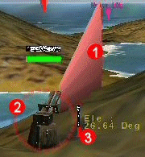
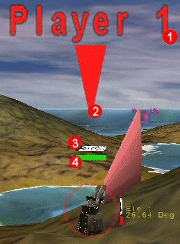
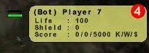

.
This indicator shows through the landscape and can be used to locate the
current tank even if it is hidden from view by the landscape. The current
player is also shown on the plan view dialog as a flashing dot.
.
This indicator shows through the landscape and can be used to locate the
current tank even if it is hidden from view by the landscape. The current
player is also shown on the plan view dialog as a flashing dot.

For the player whos current turn it is a current player indicator is displayed .
This indicator shows through the landscape and can be used to locate the
current tank even if it is hidden from view by the landscape. The current
player is also shown on the plan view dialog as a flashing dot.
Aiming information for the tank is displayed as a red aiming triangle  that extends out of the front of the tank. This aiming triangle is aligned to
the current horizontal rotation and vertical elevation of the tanks gun. The
next shot will follow the path of the top of the triangle until affected by
gravity, the landscape or the wind. The triangle makes the direction of the gun
easier to see from a long distance, however for the best view of the gun it may
be necerssary to move the camera. See here for a more
detailed look at the on camera movement.
that extends out of the front of the tank. This aiming triangle is aligned to
the current horizontal rotation and vertical elevation of the tanks gun. The
next shot will follow the path of the top of the triangle until affected by
gravity, the landscape or the wind. The triangle makes the direction of the gun
easier to see from a long distance, however for the best view of the gun it may
be necerssary to move the camera. See here for a more
detailed look at the on camera movement.
Next to the tank a HUD is displayed  . This HUD
is only displayed when changes are made to the tanks aiming direction.
. This HUD
is only displayed when changes are made to the tanks aiming direction.
The actual aiming of the tank is performed using the arrow/cursor keys on the
keyboard (not the keypad). The horizontal rotation can be altered by using the
left and right arrow keys. The vertical elevation can be altered by using the
up and down arrow keys. The shot power can be altered by using the "+" and "-"
keys. The current weapon can be altered by using the tab key. Fine adjustments
can be made to the aiming by holding down the shift key with any other key.
If at any point you want to revert back to the rotation, elevation and power
used for the last shot press the U key. Settings used for any previously made
shots can be viewed by clicking on the power icon on the weapons dialog.
Once satisfied with the direction the tank is aiming you can fire the shot by
pressing the space key. All shots are affected by both gravity and wind. Both
of these factors need to be taken into account when lining up each shot.
See here for a full list of the Scorched3D keys.
Auto Aiming
As well as using the keyboard to aim you can use the auto aiming feature. This feature allows the user to aim the tank at any point on the landscape. However only the tanks horizontal rotation is aimed at the point, both the power and vertical elevation must still be performed manually.
To auto aim, point the mouse pointer at the position on the lanscape at which you wish the tank to aim. Then press the "a" key on the keyboard (do not click any mouse button). The tank should now rotate to point at this position on the lanscape. The position on the landscape is also marked by a yellow stick.
Tank Indicators
Above every tank is the player name , color
and indicators for health  and shield energy .
and shield energy .
The player name indicator shows the name of the player that controls this tank.
The color indicator is colored the same color as the player that controls this
tank.
The health and shield indicators display the amount of health or shield this
player has left.

A tooltip containing this information will
also be shown if the mouse pointer is moved over any tank, or over a dot on the
plan view dialog. This can be used if the camera is too far from a tank to be
able to read the other indicators clearly.